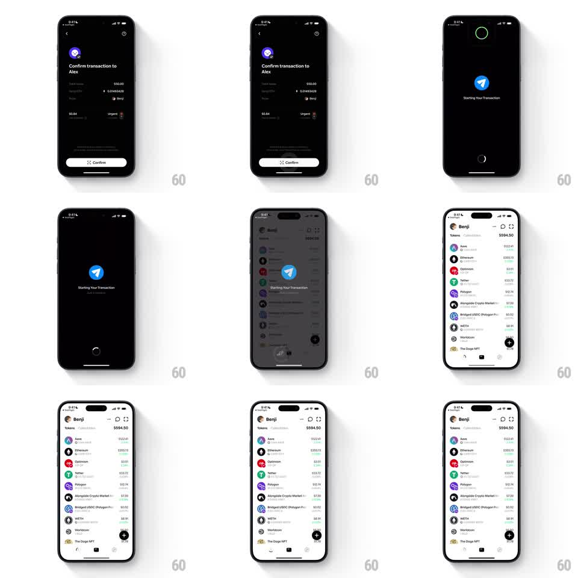

Media
Frame-by-frame

Rebuild this interaction 1:1: Family's confirm-transaction spinner travel - tapping Confirm on the dark "Confirm transaction to Alex" screen births a loading state ("Starting Your Transaction", blue send glyph, green ring in the top island), then the spinner travels down and docks as a progress ring around the wallet home's bottom action button while the home screen reveals.

Rebuild this interaction 1:1: Family's confirm-transaction spinner travel - tapping Confirm on the dark "Confirm transaction to Alex" screen births a loading state ("Starting Your Transaction", blue send glyph, green ring in the top island), then the spinner travels down and docks as a progress ring around the wallet home's bottom action button while the home screen reveals.
## Integration
Integration: stack-agnostic spec - springs given as stiffness/damping, timed motions as duration + curve; map every value to your framework and animation library of choice.
## Scene
Dark confirm screen: Alex avatar, "Confirm transaction to Alex", rows ($50.00 / 0.01493428 ETH, To: Alex, From: Benji), fee "$0.84 Urgent" (flame icon), white Confirm pill. Loading state: black screen, green ring spinner inside the top island, blue paper-plane glyph, "Starting Your Transaction". Destination: light Benji wallet home ("Tokens $594.50", Aave/Ethereum/Optimism/Tether/Polygon/Alongside/Bridged USDC/WETH/Worldcoin/The Doge NFT rows), bottom bar with the black circular action button.
## Motion spec
Pattern: spinner handoff from island to bottom action button.
- Tap Confirm: the confirm content fades (200ms); the green ring draws in the island (stroke trim, 300ms) and spins (1s/rev linear), the send glyph and label fading in (200ms).
- The loading overlay fades (300ms) revealing the home screen beneath; simultaneously the island ring detaches and flies a downward arc (400ms, ease-in-out) toward the bottom action button.
- The ring lands as a progress circle around the black button (radius easing to the button's, 200ms), keeps spinning, then completes (stroke closes full circle, 300ms) and the button pops (scale 1 -> 1.1 -> 1, spring ~340/14) with a check flash (150ms).
- The token list staggers in under the completed state (40ms rows).
## Calibration
- One spinner object throughout - color (green), stroke width, and spin speed stay constant across the travel.
- The home screen is fully interactive the moment the ring docks.
## Reduced motion
The spinner crossfades between island and button (250ms); no arc.
## Don't miss
- The fee is "$0.84 Urgent" with a flame - it justifies the spinner's urgency.
- The island ring is green on black; the docked ring is green around the black button.